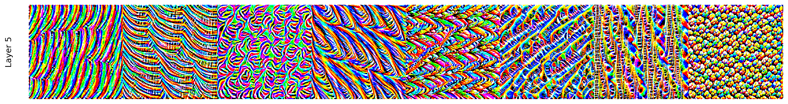
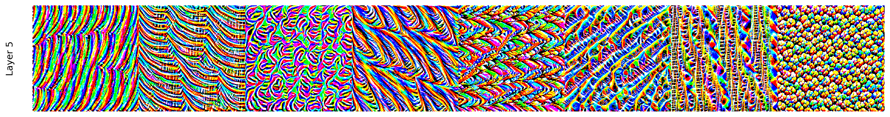

Lecture 7: Convolutional Neural Networks#
Handling image data
Joaquin Vanschoren, Eindhoven University of Technology
Overview#
Image convolution
Convolutional neural networks
Data augmentation
Real-world CNNs
Model interpretation
Using pre-trained networks (transfer learning)
Show code cell source
# Auto-setup when running on Google Colab
import os
if 'google.colab' in str(get_ipython()) and not os.path.exists('/content/master'):
!git clone -q https://github.com/ML-course/master.git /content/master
!pip --quiet install -r /content/master/requirements_colab.txt
%cd master/notebooks
# Global imports and settings
%matplotlib inline
from preamble import *
interactive = False # Set to True for interactive plots
if interactive:
fig_scale = 0.5
plt.rcParams.update(print_config)
else: # For printing
fig_scale = 0.4
plt.rcParams.update(print_config)
HTML('''<style>.rise-enabled .reveal pre {font-size=75%} </style>''')
%%javascript
IPython.OutputArea.prototype._should_scroll = function(lines) {
return false;
}
Show code cell source
import pickle
data_dir = '../data/cats-vs-dogs_small'
model_dir = '../data/models'
if not os.path.exists(data_dir):
os.makedirs(data_dir)
if not os.path.exists(model_dir):
os.makedirs(model_dir)
with open("../data/histories.pkl", "rb") as f:
histories = pickle.load(f)
Convolutions#
Operation that transforms an image by sliding a smaller image (called a filter or kernel ) over the image and multiplying the pixel values
Slide an \(n\) x \(n\) filter over \(n\) x \(n\) patches of the original image
Every pixel is replaced by the sum of the element-wise products of the values of the image patch around that pixel and the kernel
# kernel and image_patch are n x n matrices
pixel_out = np.sum(kernel * image_patch)

Show code cell source
from __future__ import print_function
import ipywidgets as widgets
from ipywidgets import interact, interact_manual, Dropdown
from skimage import color
# Visualize convolution. See https://tonysyu.github.io/
def iter_pixels(image):
""" Yield pixel position (row, column) and pixel intensity. """
height, width = image.shape[:2]
for i in range(height):
for j in range(width):
yield (i, j), image[i, j]
# Visualize result
def imshow_pair(image_pair, titles=('', ''), figsize=(8, 4), **kwargs):
fig, axes = plt.subplots(ncols=2, figsize=figsize)
for ax, img, label in zip(axes.ravel(), image_pair, titles):
ax.imshow(img, **kwargs)
ax.set_title(label, fontdict={'fontsize':32*fig_scale})
ax.set_xticks([])
ax.set_yticks([])
# Visualize result
def imshow_triple(axes, image_pair, titles=('', '', ''), figsize=(8, 4), **kwargs):
for ax, img, label in zip(axes, image_pair, titles):
ax.imshow(img, **kwargs)
ax.set_title(label, fontdict={'fontsize':10*fig_scale})
ax.set_xticks([])
ax.set_yticks([])
# Zero-padding
def padding_for_kernel(kernel):
""" Return the amount of padding needed for each side of an image.
For example, if the returned result is [1, 2], then this means an
image should be padded with 1 extra row on top and bottom, and 2
extra columns on the left and right.
"""
# Slice to ignore RGB channels if they exist.
image_shape = kernel.shape[:2]
# We only handle kernels with odd dimensions so make sure that's true.
# (The "center" pixel of an even number of pixels is arbitrary.)
assert all((size % 2) == 1 for size in image_shape)
return [(size - 1) // 2 for size in image_shape]
def add_padding(image, kernel):
h_pad, w_pad = padding_for_kernel(kernel)
return np.pad(image, ((h_pad, h_pad), (w_pad, w_pad)),
mode='constant', constant_values=0)
def remove_padding(image, kernel):
inner_region = [] # A 2D slice for grabbing the inner image region
for pad in padding_for_kernel(kernel):
slice_i = np.s_[:] if pad == 0 else np.s_[pad: -pad]
inner_region.append(slice_i)
return image # [inner_region] # Broken in numpy 1.24, doesn't seem necessary
# Slice windows
def window_slice(center, kernel):
r, c = center
r_pad, c_pad = padding_for_kernel(kernel)
# Slicing is (inclusive, exclusive) so add 1 to the stop value
return np.s_[r-r_pad:r+r_pad+1, c-c_pad:c+c_pad+1]
# Apply convolution kernel to image patch
def apply_kernel(center, kernel, original_image):
image_patch = original_image[window_slice(center, kernel)]
# An element-wise multiplication followed by the sum
return np.sum(kernel * image_patch)
# Move kernel over the image
def iter_kernel_labels(image, kernel):
original_image = image
image = add_padding(original_image, kernel)
i_pad, j_pad = padding_for_kernel(kernel)
for (i, j), pixel in iter_pixels(original_image):
# Shift the center of the kernel to ignore padded border.
i += i_pad
j += j_pad
mask = np.zeros(image.shape, dtype=int) # Background = 0
mask[window_slice((i, j), kernel)] = kernel # Kernel = 1
#mask[i, j] = 2 # Kernel-center = 2
yield (i, j), mask
# Visualize kernel as it moves over the image
def visualize_kernel(kernel_labels, image):
return kernel_labels + image #color.label2rgb(kernel_labels, image, bg_label=0)
def convolution_demo(image, kernels, **kwargs):
# Dropdown for selecting kernels
kernel_names = list(kernels.keys())
kernel_selector = Dropdown(options=kernel_names, description='Kernel:')
def update_convolution(kernel_name):
kernel = kernels[kernel_name] # Get the selected kernel
gen_kernel_labels = iter_kernel_labels(image, kernel)
image_cache = []
image_padded = add_padding(image, kernel)
def convolution_step(i_step=0):
while i_step >= len(image_cache):
filtered_prev = image_padded if i_step == 0 else image_cache[-1][1]
filtered = filtered_prev.copy()
center, kernel_labels = next(gen_kernel_labels)
filtered[center] = apply_kernel(center, kernel, image_padded)
kernel_overlay = visualize_kernel(kernel_labels, image_padded)
image_cache.append((kernel_overlay, filtered))
image_pair = [remove_padding(each, kernel) for each in image_cache[i_step]]
imshow_pair(image_pair, **kwargs)
plt.show()
interact(convolution_step, i_step=(0, image.size - 1, 1))
interact(update_convolution, kernel_name=kernel_selector);
# Full process
def convolution_full(ax, image, kernel, **kwargs):
# Initialize generator since we're only ever going to iterate over
# a pixel once. The cached result is used, if we step back.
gen_kernel_labels = iter_kernel_labels(image, kernel)
image_cache = []
image_padded = add_padding(image, kernel)
# Plot original image and kernel-overlay next to filtered image.
for i_step in range(image.size-1):
# For the first step (`i_step == 0`), the original image is the
# filtered image; after that we look in the cache, which stores
# (`kernel_overlay`, `filtered`).
filtered_prev = image_padded if i_step == 0 else image_cache[-1][1]
# We don't want to overwrite the previously filtered image:
filtered = filtered_prev.copy()
# Get the labels used to visualize the kernel
center, kernel_labels = next(gen_kernel_labels)
# Modify the pixel value at the kernel center
filtered[center] = apply_kernel(center, kernel, image_padded)
# Take the original image and overlay our kernel visualization
kernel_overlay = visualize_kernel(kernel_labels, image_padded)
# Save images for reuse.
image_cache.append((kernel_overlay, filtered))
# Remove padding we added to deal with boundary conditions
# (Loop since each step has 2 images)
image_triple = [remove_padding(each, kernel)
for each in image_cache[i_step]]
image_triple.insert(1,kernel)
imshow_triple(ax, image_triple, **kwargs)
Different kernels can detect different types of patterns in the image
Show code cell source
horizontal_edge_kernel = np.array([[ 1, 2, 1],
[ 0, 0, 0],
[-1, -2, -1]])
diagonal_edge_kernel = np.array([[1, 0, 0],
[0, 1, 0],
[0, 0, 1]])
edge_detect_kernel = np.array([[-1, -1, -1],
[-1, 8, -1],
[-1, -1, -1]])
all_kernels = {"horizontal": horizontal_edge_kernel,
"diagonal": diagonal_edge_kernel,
"edge_detect":edge_detect_kernel}
Show code cell source
mnist_data = oml.datasets.get_dataset(554) # Download MNIST data
# Get the predictors X and the labels y
X_mnist, y_mnist, c, a = mnist_data.get_data(dataset_format='array', target=mnist_data.default_target_attribute);
image = X_mnist[1].reshape((28, 28))
image = (image - np.min(image))/np.ptp(image) # Normalize
if interactive:
titles = ('Image and kernel', 'Filtered image')
convolution_demo(image, all_kernels, vmin=-4, vmax=4, titles=titles, cmap='gray_r');
Show code cell source
if not interactive:
fig, axs = plt.subplots(3, 3, figsize=(5*fig_scale, 5*fig_scale))
titles = ('Image and kernel', 'Hor. edge filter', 'Filtered image')
convolution_full(axs[0,:], image, horizontal_edge_kernel, vmin=-4, vmax=4, titles=titles, cmap='gray_r')
titles = ('Image and kernel', 'Edge detect filter', 'Filtered image')
convolution_full(axs[1,:], image, edge_detect_kernel, vmin=-4, vmax=4, titles=titles, cmap='gray_r')
titles = ('Image and kernel', 'Diag. edge filter', 'Filtered image')
convolution_full(axs[2,:], image, diagonal_edge_kernel, vmin=-4, vmax=4, titles=titles, cmap='gray_r')
plt.tight_layout()
Demonstration on Fashion-MNIST#
Show code cell source
fmnist_data = oml.datasets.get_dataset(40996) # Download FMNIST data
# Get the predictors X and the labels y
X_fm, y_fm, _, _ = fmnist_data.get_data(dataset_format='array', target=fmnist_data.default_target_attribute)
fm_classes = {0:"T-shirt/top", 1: "Trouser", 2: "Pullover", 3: "Dress", 4: "Coat", 5: "Sandal",
6: "Shirt", 7: "Sneaker", 8: "Bag", 9: "Ankle boot"}
Show code cell source
# build a list of figures for plotting
def buildFigureList(fig, subfiglist, titles, length):
for i in range(0,length):
pixels = np.array(subfiglist[i], dtype='float')
pixels = pixels.reshape((28, 28))
a=fig.add_subplot(1,length,i+1)
imgplot =plt.imshow(pixels, cmap='gray_r')
a.set_title(fm_classes[titles[i]], fontsize=6)
a.axes.get_xaxis().set_visible(False)
a.axes.get_yaxis().set_visible(False)
return
subfiglist = []
titles=[]
for i in range(0,7):
subfiglist.append(X_fm[i])
titles.append(i)
buildFigureList(plt.figure(1),subfiglist, titles, 7)
plt.show()
Demonstration of convolution with edge filters
Show code cell source
def normalize_image(X):
image = X.reshape((28, 28))
return (image - np.min(image))/np.ptp(image) # Normalize
if interactive:
image = normalize_image(X_fm[3])
demo2 = convolution_demo(image, all_kernels,
vmin=-4, vmax=4, cmap='gray_r');
Show code cell source
if not interactive:
fig, axs = plt.subplots(3, 3, figsize=(5*fig_scale, 5*fig_scale))
titles = ('Image and kernel', 'Hor. edge filter', 'Filtered image')
convolution_full(axs[0,:], image, horizontal_edge_kernel, vmin=-4, vmax=4, titles=titles, cmap='gray_r')
titles = ('Image and kernel', 'Diag. edge filter', 'Filtered image')
convolution_full(axs[1,:], image, diagonal_edge_kernel, vmin=-4, vmax=4, titles=titles, cmap='gray_r')
titles = ('Image and kernel', 'Edge detect filter', 'Filtered image')
convolution_full(axs[2,:], image, edge_detect_kernel, vmin=-4, vmax=4, titles=titles, cmap='gray_r')
plt.tight_layout()
Image convolution in practice#
How do we know which filters are best for a given image?
Families of kernels (or filter banks ) can be run on every image
Gabor, Sobel, Haar Wavelets,…
Gabor filters: Wave patterns generated by changing:
Frequency: narrow or wide ondulations
Theta: angle (direction) of the wave
Sigma: resolution (size of the filter)
Demonstration of Gabor filters
from scipy import ndimage as ndi
from skimage import data
from skimage.util import img_as_float
from skimage.filters import gabor_kernel
# Gabor Filters
@interact
def demoGabor(frequency=(0.01,1,0.05), theta=(0,3.14,0.1), sigma=(0,5,0.1)):
plt.gray()
plt.imshow(np.real(gabor_kernel(frequency=frequency, theta=theta, sigma_x=sigma, sigma_y=sigma)), interpolation='nearest', extent=[-1, 1, -1, 1])
plt.title(f'freq: {round(frequency,2)}, theta: {round(theta,2)}, sigma: {round(sigma,2)}', fontdict={'fontsize':14*fig_scale})
plt.xticks([])
plt.yticks([])
Show code cell source
if not interactive:
plt.subplot(1, 3, 1)
demoGabor(frequency=0.16, theta=1.2, sigma=4.0)
plt.subplot(1, 3, 2)
demoGabor(frequency=0.31, theta=0, sigma=3.6)
plt.subplot(1, 3, 3)
demoGabor(frequency=0.36, theta=1.6, sigma=1.3)
plt.tight_layout()
Demonstration on the Fashion-MNIST data
Show code cell source
# Calculate the magnitude of the Gabor filter response given a kernel and an imput image
def magnitude(image, kernel):
image = (image - image.mean()) / image.std() # Normalize images
return np.sqrt(ndi.convolve(image, np.real(kernel), mode='wrap')**2 +
ndi.convolve(image, np.imag(kernel), mode='wrap')**2)
Show code cell source
@interact
def demoGabor2(frequency=(0.01,1,0.05), theta=(0,3.14,0.1), sigma=(0,5,0.1)):
plt.subplot(131)
plt.title('Original', fontdict={'fontsize':24*fig_scale})
plt.imshow(image)
plt.xticks([])
plt.yticks([])
plt.subplot(132)
plt.title('Gabor kernel', fontdict={'fontsize':24*fig_scale})
plt.imshow(np.real(gabor_kernel(frequency=frequency, theta=theta, sigma_x=sigma, sigma_y=sigma)), interpolation='nearest')
plt.xticks([])
plt.yticks([])
plt.subplot(133)
plt.title('Response magnitude', fontdict={'fontsize':24*fig_scale})
plt.imshow(np.real(magnitude(image, gabor_kernel(frequency=frequency, theta=theta, sigma_x=sigma, sigma_y=sigma))), interpolation='nearest')
plt.tight_layout()
plt.xticks([])
plt.yticks([])
plt.show()
Show code cell source
if not interactive:
demoGabor2(frequency=0.16, theta=1.4, sigma=1.2)
Filter banks#
Different filters detect different edges, shapes,…
Not all seem useful
Show code cell source
# More images
# Fetch some Fashion-MNIST images
boot = X_fm[0].reshape(28, 28)
shirt = X_fm[1].reshape(28, 28)
dress = X_fm[2].reshape(28, 28)
image_names = ('boot', 'shirt', 'dress')
images = (boot, shirt, dress)
def plot_filter_bank(images):
# Create a set of kernels, apply them to each image, store the results
results = []
kernel_params = []
for theta in (0, 1):
theta = theta / 4. * np.pi
for frequency in (0.1, 0.2):
for sigma in (1, 3):
kernel = gabor_kernel(frequency, theta=theta,sigma_x=sigma,sigma_y=sigma)
params = 'theta=%.2f,\nfrequency=%.2f\nsigma=%.2f' % (theta, frequency, sigma)
kernel_params.append(params)
results.append((kernel, [magnitude(img, kernel) for img in images]))
# Plotting
fig, axes = plt.subplots(nrows=4, ncols=9, figsize=(14*fig_scale, 8*fig_scale))
plt.gray()
#fig.suptitle('Image responses for Gabor filter kernels', fontsize=12)
axes[0][0].axis('off')
for label, img, ax in zip(image_names, images, axes[1:]):
axs = ax[0]
axs.imshow(img)
axs.set_ylabel(label, fontsize=12*fig_scale)
axs.set_xticks([]) # Remove axis ticks
axs.set_yticks([])
# Plot Gabor kernel
col = 1
for label, (kernel, magnitudes), ax_col in zip(kernel_params, results, axes[0][1:]):
ax_col.imshow(np.real(kernel), interpolation='nearest') # Plot kernel
ax_col.set_title(label, fontsize=10*fig_scale)
ax_col.axis('off')
# Plot Gabor responses with the contrast normalized for each filter
vmin = np.min(magnitudes)
vmax = np.max(magnitudes)
for patch, ax in zip(magnitudes, axes.T[col][1:]):
ax.imshow(patch, vmin=vmin, vmax=vmax) # Plot convolutions
ax.axis('off')
col += 1
plt.show()
plot_filter_bank(images)
Convolutional neural nets#
Finding relationships between individual pixels and the correct class is hard
Simplify the problem by decomposing it into smaller problems
First, discover ‘local’ patterns (edges, lines, endpoints)
Representing such local patterns as features makes it easier to learn from them
Deeper layers will do that for us
We could use convolutions, but how to choose the filters?

Convolutional Neural Networks (ConvNets)#
Instead of manually designing the filters, we can also learn them based on data
Choose filter sizes (manually), initialize with small random weights
Forward pass: Convolutional layer slides the filter over the input, generates the output
Backward pass: Update the filter weights according to the loss gradients
Illustration for 1 filter:

Convolutional layers: Feature maps#
One filter is not sufficient to detect all relevant patterns in an image
A convolutional layer applies and learns \(d\) filters in parallel
Slide \(d\) filters across the input image (in parallel) -> a (1x1xd) output per patch
Reassemble into a feature map with \(d\) ‘channels’, a (width x height x d) tensor.

Border effects (zero padding)#
Consider a 5x5 image and a 3x3 filter: there are only 9 possible locations, hence the output is a 3x3 feature map
If we want to maintain the image size, we use zero-padding, adding 0’s all around the input tensor.


Undersampling (striding)#
Sometimes, we want to downsample a high-resolution image
Faster processing, less noisy (hence less overfitting)
Forces the model to summarize information in (smaller) feature maps
One approach is to skip values during the convolution
Distance between 2 windows: stride length
Example with stride length 2 (without padding):

Max-pooling#
Another approach to shrink the input tensors is max-pooling :
Run a filter with a fixed stride length over the image
Usually 2x2 filters and stride lenght 2
The filter simply returns the max (or avg ) of all values
Agressively reduces the number of weights (less overfitting)

Receptive field#
Receptive field: how much each output neuron ‘sees’ of the input image
Translation invariance: shifting the input does not affect the output
Large receptive field -> neurons can ‘see’ patterns anywhere in the input
\(nxn\) convolutions only increase the receptive field by \(n+2\) each layer
Maxpooling doubles the receptive field without deepening the network
import matplotlib.patches as patches
def draw_grid(ax, size, offset):
"""Draws a grid without text labels"""
for i in range(size):
for j in range(size):
ax.add_patch(patches.Rectangle((j + offset[0], -i + offset[1]), 1, 1,
fill=False, edgecolor='gray', linewidth=1))
def highlight_region(ax, positions, offset, color, alpha=0.3):
"""Highlights a specific region in the grid"""
for x, y in positions:
ax.add_patch(patches.Rectangle((x + offset[0], -y + offset[1]), 1, 1, fill=True, color=color, alpha=alpha))
def draw_connection_hull(ax, points, color, alpha):
"""Draws a polygon representing the hull of connection lines"""
ax.add_patch(patches.Polygon(points, closed=True, facecolor=color, alpha=alpha, edgecolor=None))
def add_titles(ax, option):
"""Adds titles above each matrix"""
titles = ["Input", option, "Output_1", "Kernel_2", "Output_2"]
positions = [(0, 1.5), (9, 1.5), (15, 1.5), (20, 1.5), (24, 1.5)]
for title, (x, y) in zip(titles, positions):
ax.text(x, y, title, fontsize=12, fontweight='bold', ha='left')
layer_options = ['3x3 Kernel', '3x3 Kernel, Stride 2', '5x5 Kernel', 'MaxPool 2x2']
layer_options2 = ['3x3 Kernel', '3x3 Kernel, Dilation 2']
@interact
def visualize_receptive_field(option=layer_options):
fig, ax = plt.subplots(figsize=(18, 6))
ax.set_xlim(-2, 26)
ax.set_ylim(-9, 2)
ax.axis('off')
add_titles(ax, option)
kernel_size = 0
grids = [(8, (0, 0)), (4, (15, 0)), (3, (20, 0)), (2, (24, 0))]
single_output_rf = [(0, 0)]
for size, offset in grids:
draw_grid(ax, size, offset)
if option == 'MaxPool 2x2':
full_input_rf = [(x, y) for x in range(6) for y in range(6)]
highlight_region(ax, full_input_rf, (0, 0), 'green', alpha=0.3)
else:
kernel_size = 3 if option.startswith('3x3 Kernel') else 5
draw_grid(ax, kernel_size, (9, 0))
input_highlight_size = kernel_size + 2
if option == '3x3 Kernel, Stride 2' or option == '3x3 Kernel, Dilation 2':
input_highlight_size = kernel_size + 4
full_input_rf = [(x, y) for x in range(input_highlight_size) for y in range(input_highlight_size)]
kernel_1 = [(x, y) for x in range(kernel_size) for y in range(kernel_size)]
kernel_rf = kernel_1
if option == '3x3 Kernel, Dilation 2':
kernel_rf = [(x*2, y*2) for x in range(kernel_size) for y in range(kernel_size)]
highlight_region(ax, full_input_rf, (0, 0), 'green')
highlight_region(ax, kernel_rf, (0, 0), 'blue')
highlight_region(ax, kernel_1, (9, 0), 'blue')
highlight_region(ax, single_output_rf, (15, 0), 'blue')
kernel2_rf = [(x, y) for x in range(3) for y in range(3)]
highlight_region(ax, kernel2_rf, (15, 0), 'green')
highlight_region(ax, kernel2_rf, (20, 0), 'green')
highlight_region(ax, single_output_rf, (24, 0), 'green')
connection_hulls = [
([(23, -2), (23, 1), (24, 1), (24, 0)], 'green', 0.1),
([(18, -2), (18, 1), (20, 1), (20, -2)], 'green', 0.1)
]
kernel_fp = kernel_size * 2 - 1 if option == '3x3 Kernel, Dilation 2' else kernel_size
if option != 'MaxPool 2x2':
connection_hulls.extend([
([(kernel_fp, 1-kernel_fp), (kernel_fp, 1), (9, 1), (9, 1-kernel_size)], 'blue', 0.1),
([(9+kernel_size, 1-kernel_size), (9+kernel_size, 1), (15, 1), (15, 0)], 'blue', 0.1)
])
else:
connection_hulls.extend([
([(6, -5), (6, 1), (15, 1), (15, -2)], 'green', 0.1),
])
for points, color, alpha in connection_hulls:
draw_connection_hull(ax, points, color, alpha)
plt.show()
if not interactive:
for option in layer_options[0::3]:
visualize_receptive_field(option=option)
Dilated convolutions#
Downsample by introducing ‘gaps’ between filter elements by spacing them out
Increases the receptive field exponentially
Doesn’t need extra parameters or computation (unlike larger filters)
Retains feature map size (unlike pooling)
@interact
def visualize_receptive_field2(option=layer_options2):
visualize_receptive_field(option)
if not interactive:
visualize_receptive_field(option=layer_options2[1])

Convolutional nets in practice#
Use multiple convolutional layers to learn patterns at different levels of abstraction
Find local patterns first (e.g. edges), then patterns across those patterns
Use MaxPooling layers to reduce resolution, increase translation invariance
Use sufficient filters in the first layer (otherwise information gets lost)
In deeper layers, use increasingly more filters
Preserve information about the input as resolution descreases
Avoid decreasing the number of activations (resolution x nr of filters)
For very deep nets, add skip connections to preserve information (and gradients)
Sums up outputs of earlier layers to those of later layers (with same dimensions)
Example with PyTorch#
Conv2dfor 2D convolutional layersGrayscale image: 1 in_channels
32 filters: 32 out_channels, 3x3 size
Deeper layers use 64 filters
ReLUactivation, no paddingMaxPool2dfor max-pooling, 2x2
model = nn.Sequential(
nn.Conv2d(in_channels=1, out_channels=32, kernel_size=3),
nn.ReLU(),
nn.MaxPool2d(kernel_size=2, stride=2),
nn.Conv2d(in_channels=32, out_channels=64, kernel_size=3),
nn.ReLU(),
nn.MaxPool2d(kernel_size=2, stride=2),
nn.Conv2d(in_channels=64, out_channels=64, kernel_size=3),
nn.ReLU()
)
import torch
import torch.nn as nn
model = nn.Sequential(
nn.Conv2d(in_channels=1, out_channels=32, kernel_size=3, padding=0),
nn.ReLU(),
nn.MaxPool2d(kernel_size=2, stride=2),
nn.Conv2d(in_channels=32, out_channels=64, kernel_size=3, padding=0),
nn.ReLU(),
nn.MaxPool2d(kernel_size=2, stride=2),
nn.Conv2d(in_channels=64, out_channels=64, kernel_size=3, padding=0),
nn.ReLU()
)
Observe how the input image on 1x28x28 is transformed to a 64x3x3 feature map
In pytorch, shapes are (batch_size, channels, height, width)
Conv2d parameters = (kernel size^2 × input channels + 1) × output channels
No zero-padding: every output is 2 pixels less in every dimension
After every MaxPooling, resolution halved in every dimension
from torchinfo import summary
summary(model, input_size=(1, 1, 28, 28))
==========================================================================================
Layer (type:depth-idx) Output Shape Param #
==========================================================================================
Sequential [1, 64, 3, 3] --
├─Conv2d: 1-1 [1, 32, 26, 26] 320
├─ReLU: 1-2 [1, 32, 26, 26] --
├─MaxPool2d: 1-3 [1, 32, 13, 13] --
├─Conv2d: 1-4 [1, 64, 11, 11] 18,496
├─ReLU: 1-5 [1, 64, 11, 11] --
├─MaxPool2d: 1-6 [1, 64, 5, 5] --
├─Conv2d: 1-7 [1, 64, 3, 3] 36,928
├─ReLU: 1-8 [1, 64, 3, 3] --
==========================================================================================
Total params: 55,744
Trainable params: 55,744
Non-trainable params: 0
Total mult-adds (M): 2.79
==========================================================================================
Input size (MB): 0.00
Forward/backward pass size (MB): 0.24
Params size (MB): 0.22
Estimated Total Size (MB): 0.47
==========================================================================================
To classify the images, we still need a linear and output layer.
We flatten the 3x3x64 feature map to a vector of size 576
model = nn.Sequential(
...
nn.Conv2d(in_channels=64, out_channels=64, kernel_size=3, padding=0),
nn.ReLU(),
nn.Flatten(),
nn.Linear(64 * 3 * 3, 64),
nn.ReLU(),
nn.Linear(64, 10)
)
Show code cell source
model = nn.Sequential(
nn.Conv2d(in_channels=1, out_channels=32, kernel_size=3, padding=0),
nn.ReLU(),
nn.MaxPool2d(kernel_size=2, stride=2),
nn.Conv2d(in_channels=32, out_channels=64, kernel_size=3, padding=0),
nn.ReLU(),
nn.MaxPool2d(kernel_size=2, stride=2),
nn.Conv2d(in_channels=64, out_channels=64, kernel_size=3, padding=0),
nn.ReLU(),
nn.Flatten(),
nn.Linear(64 * 3 * 3, 64),
nn.ReLU(),
nn.Linear(64, 10)
)
Complete model. Flattening adds a lot of weights!
Show code cell source
summary(model, input_size=(1, 1, 28, 28))
==========================================================================================
Layer (type:depth-idx) Output Shape Param #
==========================================================================================
Sequential [1, 10] --
├─Conv2d: 1-1 [1, 32, 26, 26] 320
├─ReLU: 1-2 [1, 32, 26, 26] --
├─MaxPool2d: 1-3 [1, 32, 13, 13] --
├─Conv2d: 1-4 [1, 64, 11, 11] 18,496
├─ReLU: 1-5 [1, 64, 11, 11] --
├─MaxPool2d: 1-6 [1, 64, 5, 5] --
├─Conv2d: 1-7 [1, 64, 3, 3] 36,928
├─ReLU: 1-8 [1, 64, 3, 3] --
├─Flatten: 1-9 [1, 576] --
├─Linear: 1-10 [1, 64] 36,928
├─ReLU: 1-11 [1, 64] --
├─Linear: 1-12 [1, 10] 650
==========================================================================================
Total params: 93,322
Trainable params: 93,322
Non-trainable params: 0
Total mult-adds (M): 2.82
==========================================================================================
Input size (MB): 0.00
Forward/backward pass size (MB): 0.24
Params size (MB): 0.37
Estimated Total Size (MB): 0.62
==========================================================================================
Global Average Pooling (GAP)#
Instead of flattening, we do GAP: returns average of each activation map
We can drop the hidden dense layer: number of outputs > number of classes
model = nn.Sequential(...
nn.AdaptiveAvgPool2d(1), # Global Average Pooling
nn.Flatten(), # Convert (batch, 64, 1, 1) -> (batch, 64)
nn.Linear(64, 10)) # Output layer for 10 classes

With
GlobalAveragePooling: much fewer weights to learnUse with caution: this destroys the location information learned by the CNN
Not ideal for tasks such as object localization
Show code cell source
model = nn.Sequential(
nn.Conv2d(in_channels=1, out_channels=32, kernel_size=3, padding=0),
nn.ReLU(),
nn.MaxPool2d(kernel_size=2, stride=2),
nn.Conv2d(in_channels=32, out_channels=64, kernel_size=3, padding=0),
nn.ReLU(),
nn.MaxPool2d(kernel_size=2, stride=2),
nn.Conv2d(in_channels=64, out_channels=64, kernel_size=3, padding=0),
nn.ReLU(),
nn.AdaptiveAvgPool2d(1), # Global Average Pooling (GAP)
nn.Flatten(), # Convert (batch, 64, 1, 1) -> (batch, 64)
nn.Linear(64, 10) # Output layer for 10 classes
)
summary(model, input_size=(1, 1, 28, 28))
==========================================================================================
Layer (type:depth-idx) Output Shape Param #
==========================================================================================
Sequential [1, 10] --
├─Conv2d: 1-1 [1, 32, 26, 26] 320
├─ReLU: 1-2 [1, 32, 26, 26] --
├─MaxPool2d: 1-3 [1, 32, 13, 13] --
├─Conv2d: 1-4 [1, 64, 11, 11] 18,496
├─ReLU: 1-5 [1, 64, 11, 11] --
├─MaxPool2d: 1-6 [1, 64, 5, 5] --
├─Conv2d: 1-7 [1, 64, 3, 3] 36,928
├─ReLU: 1-8 [1, 64, 3, 3] --
├─AdaptiveAvgPool2d: 1-9 [1, 64, 1, 1] --
├─Flatten: 1-10 [1, 64] --
├─Linear: 1-11 [1, 10] 650
==========================================================================================
Total params: 56,394
Trainable params: 56,394
Non-trainable params: 0
Total mult-adds (M): 2.79
==========================================================================================
Input size (MB): 0.00
Forward/backward pass size (MB): 0.24
Params size (MB): 0.23
Estimated Total Size (MB): 0.47
==========================================================================================
Run the model on MNIST dataset
Train and test as usual: 99% accuracy
Compared to 97,8% accuracy with the dense architecture
FlattenandGlobalAveragePoolingyield similar performance
import pytorch_lightning as pl
# Keeps a history of scores to make plotting easier
class MetricTracker(pl.Callback):
def __init__(self):
super().__init__()
self.history = {
"train_loss": [],
"train_acc": [],
"val_loss": [],
"val_acc": []
}
self.first_validation = True # Flag to ignore first validation step
def on_train_epoch_end(self, trainer, pl_module):
"""Collects training metrics at the end of each epoch"""
train_loss = trainer.callback_metrics.get("train_loss")
train_acc = trainer.callback_metrics.get("train_acc")
if train_loss is not None:
self.history["train_loss"].append(train_loss.cpu().item())
if train_acc is not None:
self.history["train_acc"].append(train_acc.cpu().item())
def on_validation_epoch_end(self, trainer, pl_module):
"""Collects validation metrics at the end of each epoch"""
if self.first_validation:
self.first_validation = False # Skip first validation logging
return
val_loss = trainer.callback_metrics.get("val_loss")
val_acc = trainer.callback_metrics.get("val_acc")
if val_loss is not None:
self.history["val_loss"].append(val_loss.cpu().item())
if val_acc is not None:
self.history["val_acc"].append(val_acc.cpu().item())
def plot_training(history):
plt.figure(figsize=(12, 4)) # Increased figure size
# Plot Loss
plt.subplot(1, 2, 1)
plt.plot(history["train_loss"], label="Train Loss", marker='o', lw=2)
plt.plot(history["val_loss"], label="Validation Loss", marker='o', lw=2)
plt.xlabel("Epochs", fontsize=14) # Larger font size
plt.ylabel("Loss", fontsize=14)
plt.title("Loss vs. Epochs", fontsize=16, fontweight="bold")
plt.xticks(fontsize=12)
plt.yticks(fontsize=12)
plt.legend(fontsize=12)
# Plot Accuracy
plt.subplot(1, 2, 2)
plt.plot(history["train_acc"], label="Train Accuracy", marker='o', lw=2)
plt.plot(history["val_acc"], label="Validation Accuracy", marker='o', lw=2)
plt.xlabel("Epochs", fontsize=14)
plt.ylabel("Accuracy", fontsize=14)
plt.title("Accuracy vs. Epochs", fontsize=16, fontweight="bold")
plt.xticks(fontsize=12)
plt.yticks(fontsize=12)
plt.legend(fontsize=12)
plt.tight_layout() # Adjust layout for readability
plt.show()
Show code cell source
import torch.optim as optim
import torchvision.transforms as transforms
import torchvision.datasets as datasets
from torch.utils.data import DataLoader, random_split
from torchmetrics.functional import accuracy
# Model in Pytorch Lightning
class MNISTModel(pl.LightningModule):
def __init__(self, learning_rate=0.001):
super().__init__()
self.save_hyperparameters()
self.model = nn.Sequential(
nn.Conv2d(1, 32, kernel_size=3, padding=0),
nn.ReLU(),
nn.MaxPool2d(2, 2),
nn.Conv2d(32, 64, kernel_size=3, padding=0),
nn.ReLU(),
nn.MaxPool2d(2, 2),
nn.Conv2d(64, 64, kernel_size=3, padding=0),
nn.ReLU(),
nn.AdaptiveAvgPool2d(1),
nn.Flatten(),
nn.Linear(64, 10)
)
self.loss_fn = nn.CrossEntropyLoss()
def forward(self, x):
return self.model(x)
# Logging of loss and accuracy for later plotting
def training_step(self, batch, batch_idx):
x, y = batch
logits = self(x)
loss = self.loss_fn(logits, y)
acc = accuracy(logits, y, task="multiclass", num_classes=10)
self.log("train_loss", loss, prog_bar=True, on_epoch=True)
self.log("train_acc", acc, prog_bar=True, on_epoch=True)
return loss
def validation_step(self, batch, batch_idx):
x, y = batch
logits = self(x)
loss = self.loss_fn(logits, y)
acc = accuracy(logits, y, task="multiclass", num_classes=10)
self.log("val_loss", loss, prog_bar=True, on_epoch=True)
self.log("val_acc", acc, prog_bar=True, on_epoch=True)
return loss
def configure_optimizers(self):
return optim.Adam(self.parameters(), lr=self.hparams.learning_rate)
# Compute mean and std to normalize the data
# Couldn't find a way to do this automatically in PyTorch :(
# Normalization is not strictly needed, but speeds up convergence
dataset = datasets.MNIST(root=".", train=True, transform=transforms.ToTensor(), download=True)
loader = torch.utils.data.DataLoader(dataset, batch_size=1000, num_workers=4, shuffle=False)
mean = torch.mean(torch.stack([batch[0].mean() for batch in loader]))
std = torch.mean(torch.stack([batch[0].std() for batch in loader]))
# Loading the data. We'll discuss data loaders again soon.
class MNISTDataModule(pl.LightningDataModule):
def __init__(self, batch_size=64):
super().__init__()
self.batch_size = batch_size
self.transform = transforms.Compose([
transforms.ToTensor(),
transforms.Normalize((mean,), (std,)) # Normalize MNIST. Make more general?
])
def prepare_data(self):
datasets.MNIST(root=".", train=True, download=True) # Downloads dataset
def setup(self, stage=None):
full_train = datasets.MNIST(root=".", train=True, transform=self.transform)
self.train, self.val = random_split(full_train, [55000, 5000])
self.test = datasets.MNIST(root=".", train=False, transform=self.transform)
def train_dataloader(self):
return DataLoader(self.train, batch_size=self.batch_size, shuffle=True, num_workers=4)
def val_dataloader(self):
return DataLoader(self.val, batch_size=self.batch_size, num_workers=4)
def test_dataloader(self):
return DataLoader(self.test, batch_size=self.batch_size, num_workers=4)
# Initialize data & model
pl.seed_everything(42) # Ensure reproducibility
data_module = MNISTDataModule(batch_size=64)
model = MNISTModel(learning_rate=0.001)
# Trainer with logging & checkpointing
accelerator = "cpu"
if torch.backends.mps.is_available():
accelerator = "mps"
if torch.cuda.is_available():
accelerator = "gpu"
metric_tracker = MetricTracker() # Callback to track per-epoch metrics
trainer = pl.Trainer(
max_epochs=10, # Train for 10 epochs
accelerator=accelerator,
devices="auto",
log_every_n_steps=10,
deterministic=True,
callbacks=[metric_tracker] # Attach callback to trainer
)
if histories and histories["mnist"]:
history = histories["mnist"]
else:
trainer.fit(model, datamodule=data_module)
history = metric_tracker.history
# Test after training (sanity check)
# trainer.test(model, datamodule=data_module)
Seed set to 42
GPU available: True (mps), used: True
TPU available: False, using: 0 TPU cores
HPU available: False, using: 0 HPUs
plot_training(history)

Cats vs Dogs#
A more realistic dataset: Cats vs Dogs
Colored JPEG images, different sizes
Not nicely centered, translation invariance is important
Preprocessing
Decode JPEG images to floating-point tensors
Rescale pixel values to [0,1]
Resize images to 150x150 pixels
Uncomment to run from scratch
# TODO: upload dataset to OpenML so we can avoid the manual steps.
import os, shutil
# Download data from https://www.kaggle.com/c/dogs-vs-cats/data
# Uncompress `train.zip` into the `original_dataset_dir`
original_dataset_dir = '../data/cats-vs-dogs_original'
# The directory where we will
# store our smaller dataset
train_dir = os.path.join(data_dir, 'train')
validation_dir = os.path.join(data_dir, 'validation')
if not os.path.exists(data_dir):
os.mkdir(data_dir)
os.mkdir(train_dir)
os.mkdir(validation_dir)
train_cats_dir = os.path.join(train_dir, 'cats')
train_dogs_dir = os.path.join(train_dir, 'dogs')
validation_cats_dir = os.path.join(validation_dir, 'cats')
validation_dogs_dir = os.path.join(validation_dir, 'dogs')
if not os.path.exists(train_cats_dir):
os.mkdir(train_cats_dir)
os.mkdir(train_dogs_dir)
os.mkdir(validation_cats_dir)
os.mkdir(validation_dogs_dir)
# Copy first 2000 cat images to train_cats_dir
fnames = ['cat.{}.jpg'.format(i) for i in range(2000)]
for fname in fnames:
src = os.path.join(original_dataset_dir, fname)
dst = os.path.join(train_cats_dir, fname)
shutil.copyfile(src, dst)
# Copy next 1000 cat images to validation_cats_dir
fnames = ['cat.{}.jpg'.format(i) for i in range(2000, 3000)]
for fname in fnames:
src = os.path.join(original_dataset_dir, fname)
dst = os.path.join(validation_cats_dir, fname)
shutil.copyfile(src, dst)
# Copy first 2000 dog images to train_dogs_dir
fnames = ['dog.{}.jpg'.format(i) for i in range(2000)]
for fname in fnames:
src = os.path.join(original_dataset_dir, fname)
dst = os.path.join(train_dogs_dir, fname)
shutil.copyfile(src, dst)
# Copy next 1000 dog images to validation_dogs_dir
fnames = ['dog.{}.jpg'.format(i) for i in range(2000, 3000)]
for fname in fnames:
src = os.path.join(original_dataset_dir, fname)
dst = os.path.join(validation_dogs_dir, fname)
shutil.copyfile(src, dst)
import random
# Set random seed for reproducibility
def seed_everything(seed=42):
pl.seed_everything(seed) # Sets seed for PyTorch Lightning
torch.manual_seed(seed) # PyTorch
torch.cuda.manual_seed_all(seed) # CUDA (if available)
np.random.seed(seed) # NumPy
random.seed(seed) # Python random module
torch.backends.cudnn.deterministic = True # Ensures reproducibility in CNNs
torch.backends.cudnn.benchmark = False # Ensures consistency
seed_everything(42) # Set global seed
class CatDataModule(pl.LightningDataModule):
def __init__(self, data_dir, batch_size=20, img_size=(150, 150)):
super().__init__()
self.data_dir = data_dir
self.batch_size = batch_size
self.img_size = img_size
# Define image transformations
self.transform = transforms.Compose([
transforms.Resize(self.img_size), # Resize to 150x150
transforms.ToTensor(), # Convert to tensor (also scales 0-1)
])
def setup(self, stage=None):
"""Load datasets"""
train_dir = os.path.join(self.data_dir, "train")
val_dir = os.path.join(self.data_dir, "validation")
self.train_dataset = datasets.ImageFolder(root=train_dir, transform=self.transform)
self.val_dataset = datasets.ImageFolder(root=val_dir, transform=self.transform)
def train_dataloader(self):
return DataLoader(self.train_dataset, batch_size=self.batch_size, shuffle=True, num_workers=4)
def val_dataloader(self):
return DataLoader(self.val_dataset, batch_size=self.batch_size, shuffle=False, num_workers=4)
# ----------------------------
# Load dataset and visualize a batch
# ----------------------------
data_module = CatDataModule(data_dir=data_dir)
data_module.setup()
train_loader = data_module.train_dataloader()
Seed set to 42
# Get a batch of data
data_batch, labels_batch = next(iter(train_loader))
# Visualize images
plt.figure(figsize=(10, 5))
for i in range(7):
plt.subplot(1, 7, i + 1)
plt.xticks([])
plt.yticks([])
plt.imshow(data_batch[i].permute(1, 2, 0)) # Convert from (C, H, W) to (H, W, C)
plt.title("Cat" if labels_batch[i] == 0 else "Dog", fontsize=16)
plt.tight_layout()
plt.show()
Data loader#
We create a Pytorch Lightning
DataModuleto do preprocessing and data loading
class ImageDataModule(pl.LightningDataModule):
def __init__(self, data_dir, batch_size=20, img_size=(150, 150)):
super().__init__()
self.transform = transforms.Compose([
transforms.Resize(self.img_size), # Resize to 150x150
transforms.ToTensor()]) # Convert to tensor (also scales 0-1)
def setup(self, stage=None):
self.train_dataset = datasets.ImageFolder(root=train_dir, transform=self.transform)
self.val_dataset = datasets.ImageFolder(root=val_dir, transform=self.transform)
def train_dataloader(self):
return DataLoader(self.train_dataset, batch_size=self.batch_size, shuffle=True)
def val_dataloader(self):
return DataLoader(self.val_dataset, batch_size=self.batch_size, shuffle=False)
from torchmetrics.classification import Accuracy
# Model in PyTorch Lightning
class CatImageClassifier(pl.LightningModule):
def __init__(self, learning_rate=0.001):
super().__init__()
self.save_hyperparameters()
# Define convolutional layers
self.conv_layers = nn.Sequential(
nn.Conv2d(3, 32, kernel_size=3, padding=0),
nn.ReLU(),
nn.MaxPool2d(2, 2),
nn.Conv2d(32, 64, kernel_size=3, padding=0),
nn.ReLU(),
nn.MaxPool2d(2, 2),
nn.Conv2d(64, 128, kernel_size=3, padding=0),
nn.ReLU(),
nn.MaxPool2d(2, 2),
nn.Conv2d(128, 128, kernel_size=3, padding=0),
nn.ReLU(),
nn.MaxPool2d(2, 2),
nn.AdaptiveAvgPool2d(1) # GAP replaces Flatten()
)
# Fully connected layers
self.fc_layers = nn.Sequential(
nn.Linear(128, 512), # GAP outputs (batch, 128, 1, 1) → Flatten to (batch, 128)
nn.ReLU(),
nn.Linear(512, 1) # Binary classification (1 output neuron)
)
self.loss_fn = nn.BCEWithLogitsLoss()
self.accuracy = Accuracy(task="binary")
def forward(self, x):
x = self.conv_layers(x) # Convolutions + GAP
x = x.view(x.size(0), -1) # Flatten from (batch, 128, 1, 1) → (batch, 128)
x = self.fc_layers(x)
return x
def training_step(self, batch, batch_idx):
x, y = batch
logits = self(x).squeeze(1) # Remove extra dimension
loss = self.loss_fn(logits, y.float()) # BCE loss requires float labels
preds = torch.sigmoid(logits) # Convert logits to probabilities
acc = self.accuracy(preds, y)
self.log("train_loss", loss, prog_bar=True, on_epoch=True)
self.log("train_acc", acc, prog_bar=True, on_epoch=True)
return loss
def validation_step(self, batch, batch_idx):
x, y = batch
logits = self(x).squeeze(1)
loss = self.loss_fn(logits, y.float())
preds = torch.sigmoid(logits)
acc = self.accuracy(preds, y)
self.log("val_loss", loss, prog_bar=True, on_epoch=True)
self.log("val_acc", acc, prog_bar=True, on_epoch=True)
def configure_optimizers(self):
return optim.Adam(self.parameters(), lr=self.hparams.learning_rate)
Model#
Since the images are more complex, we add another convolutional layer and increase the number of filters to 128.
Show code cell source
model = CatImageClassifier()
summary(model, input_size=(1, 3, 150, 150))
==========================================================================================
Layer (type:depth-idx) Output Shape Param #
==========================================================================================
CatImageClassifier [1, 1] --
├─Sequential: 1-1 [1, 128, 1, 1] --
│ └─Conv2d: 2-1 [1, 32, 148, 148] 896
│ └─ReLU: 2-2 [1, 32, 148, 148] --
│ └─MaxPool2d: 2-3 [1, 32, 74, 74] --
│ └─Conv2d: 2-4 [1, 64, 72, 72] 18,496
│ └─ReLU: 2-5 [1, 64, 72, 72] --
│ └─MaxPool2d: 2-6 [1, 64, 36, 36] --
│ └─Conv2d: 2-7 [1, 128, 34, 34] 73,856
│ └─ReLU: 2-8 [1, 128, 34, 34] --
│ └─MaxPool2d: 2-9 [1, 128, 17, 17] --
│ └─Conv2d: 2-10 [1, 128, 15, 15] 147,584
│ └─ReLU: 2-11 [1, 128, 15, 15] --
│ └─MaxPool2d: 2-12 [1, 128, 7, 7] --
│ └─AdaptiveAvgPool2d: 2-13 [1, 128, 1, 1] --
├─Sequential: 1-2 [1, 1] --
│ └─Linear: 2-14 [1, 512] 66,048
│ └─ReLU: 2-15 [1, 512] --
│ └─Linear: 2-16 [1, 1] 513
==========================================================================================
Total params: 307,393
Trainable params: 307,393
Non-trainable params: 0
Total mult-adds (M): 234.16
==========================================================================================
Input size (MB): 0.27
Forward/backward pass size (MB): 9.68
Params size (MB): 1.23
Estimated Total Size (MB): 11.18
==========================================================================================
Training#
We use a
Trainermodule (from PyTorch Lightning) to simplify training
trainer = pl.Trainer(
max_epochs=20, # Train for 20 epochs
accelerator="gpu", # Move data and model to GPU
devices="auto", # Number of GPUs
deterministic=True, # Set random seeds, for reproducibility
callbacks=[metric_tracker, # Callback for logging loss and acc
checkpoint_callback] # Callback for logging weights
)
trainer.fit(model, datamodule=data_module)
Tip: to store the best model weights, you can add a
ModelCheckpointcallback
checkpoint_callback = ModelCheckpoint(
monitor="val_loss", # Save model with lowest val. loss
mode="min", # "min" for loss, "max" for accuracy
save_top_k=1, # Keep only the best model
dirpath="weights/", # Directory to save checkpoints
filename="cat_model", # File name pattern
)
The model learns well for the first 20 epochs, but then starts overfitting a lot!
Show code cell source
from pytorch_lightning.callbacks import ModelCheckpoint
# Train Cat model
pl.seed_everything(42) # Ensure reproducibility
data_module = CatDataModule(data_dir, batch_size=64)
model = CatImageClassifier(learning_rate=0.001)
metric_tracker = MetricTracker() # Callback to track per-epoch metrics
from pytorch_lightning.callbacks import ModelCheckpoint
# Define checkpoint callback to save the best model
checkpoint_callback = ModelCheckpoint(
monitor="val_loss", # Saves model with lowest validation loss
mode="min", # "min" for loss, "max" for accuracy
save_top_k=1, # Keep only the best model
dirpath="../data/checkpoints/", # Directory to save checkpoints
filename="cat_model", # File name pattern
)
trainer = pl.Trainer(
max_epochs=50, # Train for 20 epochs
accelerator=accelerator,
devices="auto",
log_every_n_steps=10,
deterministic=True,
callbacks=[metric_tracker, checkpoint_callback] # Attach callback to trainer
)
if histories and histories["cat"]:
history_cat = histories["cat"]
else:
trainer.fit(model, datamodule=data_module)
history_cat = metric_tracker.history
Seed set to 42
GPU available: True (mps), used: True
TPU available: False, using: 0 TPU cores
HPU available: False, using: 0 HPUs
plot_training(history_cat)

Solving overfitting in CNNs#
There are various ways to further improve the model:
Generating more training data (data augmentation)
Regularization (e.g. Dropout, L1/L2, Batch Normalization,…)
Use pretrained rather than randomly initialized filters
These are trained on a lot more data
Data augmentation#
Generate new images via image transformations (only on training data!)
Images will be randomly transformed every epoch
Update the transform in the data module
self.train_transform = transforms.Compose([
transforms.Resize(self.img_size), # Resize to 150x150
transforms.RandomRotation(40), # Rotations up to 40 degrees
transforms.RandomResizedCrop(self.img_size,
scale=(0.8, 1.2)), # Scale + crop, up to 20%
transforms.RandomHorizontalFlip(), # Horizontal flip
transforms.RandomAffine(degrees=0, shear=20), # Shear, up to 20%
transforms.ColorJitter(brightness=0.2, contrast=0.2,
saturation=0.2), # Color jitter
transforms.ToTensor(),
transforms.Normalize(mean=[0.5, 0.5, 0.5], std=[0.5, 0.5, 0.5])
])
Show code cell source
class CatDataModule(pl.LightningDataModule):
def __init__(self, data_dir, batch_size=20, img_size=(150, 150)):
super().__init__()
self.data_dir = data_dir
self.batch_size = batch_size
self.img_size = img_size
# Training Data Augmentation
self.train_transform = transforms.Compose([
transforms.Resize(self.img_size),
transforms.RandomRotation(40),
transforms.RandomResizedCrop(self.img_size, scale=(0.8, 1.2)),
transforms.RandomHorizontalFlip(),
transforms.RandomAffine(degrees=0, shear=20),
transforms.ColorJitter(brightness=0.2, contrast=0.2, saturation=0.2),
transforms.ToTensor(),
transforms.Normalize(mean=[0.5, 0.5, 0.5], std=[0.5, 0.5, 0.5])
])
# Test Data Transforms (NO augmentation, just resize + normalize)
self.val_transform = transforms.Compose([
transforms.Resize(self.img_size),
transforms.ToTensor(),
transforms.Normalize(mean=[0.5, 0.5, 0.5], std=[0.5, 0.5, 0.5])
])
def setup(self, stage=None):
"""Load datasets with correct transforms"""
train_dir = os.path.join(self.data_dir, "train")
val_dir = os.path.join(self.data_dir, "validation")
# Apply augmentation only to training data
self.train_dataset = datasets.ImageFolder(root=train_dir, transform=self.train_transform)
self.val_dataset = datasets.ImageFolder(root=val_dir, transform=self.val_transform)
def train_dataloader(self):
"""Applies augmentation via the pre-defined transform"""
return DataLoader(self.train_dataset, batch_size=self.batch_size, shuffle=True, num_workers=4)
def val_dataloader(self):
"""Loads validation data WITHOUT augmentation"""
return DataLoader(self.val_dataset, batch_size=self.batch_size, shuffle=False, num_workers=4)
Augmentation example
def show_augmented_images(data_module, num_images=8):
"""Visualize the same image with different random augmentations."""
train_dataset = data_module.train_dataset # Get training dataset with augmentation
# Select a random image (without augmentation)
idx = np.random.randint(len(train_dataset))
original_img, label = train_dataset[idx] # This is already augmented
# Convert original image back to NumPy format
original_img_np = original_img.permute(1, 2, 0).numpy() # Convert (C, H, W) → (H, W, C)
original_img_np = (original_img_np - original_img_np.min()) / (original_img_np.max() - original_img_np.min()) # Normalize
fig, axes = plt.subplots(2, 4, figsize=(10, 5)) # Create 4x2 grid
axes = axes.flatten()
for i in range(num_images):
# Apply new augmentation on the same image each time
img, _ = train_dataset[idx] # Re-fetch the same image, but with a new random augmentation
# Convert tensor image back to NumPy format
img = img.permute(1, 2, 0).numpy() # Convert (C, H, W) → (H, W, C)
img = (img - img.min()) / (img.max() - img.min()) # Normalize
# Plot the augmented image
axes[i].imshow(img)
axes[i].set_xticks([])
axes[i].set_yticks([])
plt.tight_layout()
plt.show()
# Load dataset and visualize augmented images
data_module = CatDataModule(data_dir) # Set correct dataset path
data_module.setup()
cat_data_module = data_module
show_augmented_images(data_module)
We also add Dropout before the Dense layer, and L2 regularization (‘weight decay’) in Adam
class CatImageClassifier(pl.LightningModule):
def __init__(self, learning_rate=0.001):
super().__init__()
self.save_hyperparameters()
# Define convolutional layers (CNN)
self.conv_layers = nn.Sequential(
nn.Conv2d(3, 32, kernel_size=3, padding=0),
nn.ReLU(),
nn.MaxPool2d(2, 2),
nn.Conv2d(32, 64, kernel_size=3, padding=0),
nn.ReLU(),
nn.MaxPool2d(2, 2),
nn.Conv2d(64, 128, kernel_size=3, padding=0),
nn.ReLU(),
nn.MaxPool2d(2, 2),
nn.Conv2d(128, 128, kernel_size=3, padding=0),
nn.ReLU(),
nn.MaxPool2d(2, 2),
nn.AdaptiveAvgPool2d(1) # GAP instead of Flatten
)
# Fully connected layers (FC) with Dropout
self.fc_layers = nn.Sequential(
nn.Linear(128, 512), # GAP outputs (batch, 128, 1, 1) → Flatten to (batch, 128)
nn.ReLU(),
nn.Dropout(0.5), # Dropout (same as Keras Dropout(0.5))
nn.Linear(512, 1) # Binary classification (1 output neuron)
)
self.loss_fn = nn.BCEWithLogitsLoss()
self.accuracy = Accuracy(task="binary")
def forward(self, x):
x = self.conv_layers(x) # Convolutions + GAP
x = x.view(x.size(0), -1) # Flatten from (batch, 128, 1, 1) → (batch, 128)
x = self.fc_layers(x)
return x
def training_step(self, batch, batch_idx):
x, y = batch
logits = self(x).squeeze(1) # Remove extra dimension
loss = self.loss_fn(logits, y.float()) # BCE loss requires float labels
preds = torch.sigmoid(logits) # Convert logits to probabilities
acc = self.accuracy(preds, y)
self.log("train_loss", loss, prog_bar=True, on_epoch=True)
self.log("train_acc", acc, prog_bar=True, on_epoch=True)
return loss
def validation_step(self, batch, batch_idx):
x, y = batch
logits = self(x).squeeze(1)
loss = self.loss_fn(logits, y.float())
preds = torch.sigmoid(logits)
acc = self.accuracy(preds, y)
self.log("val_loss", loss, prog_bar=True, on_epoch=True)
self.log("val_acc", acc, prog_bar=True, on_epoch=True)
def configure_optimizers(self):
return optim.Adam(self.parameters(), lr=self.hparams.learning_rate, weight_decay=1e-4)
model = CatImageClassifier()
summary(model, input_size=(1, 3, 150, 150))
==========================================================================================
Layer (type:depth-idx) Output Shape Param #
==========================================================================================
CatImageClassifier [1, 1] --
├─Sequential: 1-1 [1, 128, 1, 1] --
│ └─Conv2d: 2-1 [1, 32, 148, 148] 896
│ └─ReLU: 2-2 [1, 32, 148, 148] --
│ └─MaxPool2d: 2-3 [1, 32, 74, 74] --
│ └─Conv2d: 2-4 [1, 64, 72, 72] 18,496
│ └─ReLU: 2-5 [1, 64, 72, 72] --
│ └─MaxPool2d: 2-6 [1, 64, 36, 36] --
│ └─Conv2d: 2-7 [1, 128, 34, 34] 73,856
│ └─ReLU: 2-8 [1, 128, 34, 34] --
│ └─MaxPool2d: 2-9 [1, 128, 17, 17] --
│ └─Conv2d: 2-10 [1, 128, 15, 15] 147,584
│ └─ReLU: 2-11 [1, 128, 15, 15] --
│ └─MaxPool2d: 2-12 [1, 128, 7, 7] --
│ └─AdaptiveAvgPool2d: 2-13 [1, 128, 1, 1] --
├─Sequential: 1-2 [1, 1] --
│ └─Linear: 2-14 [1, 512] 66,048
│ └─ReLU: 2-15 [1, 512] --
│ └─Dropout: 2-16 [1, 512] --
│ └─Linear: 2-17 [1, 1] 513
==========================================================================================
Total params: 307,393
Trainable params: 307,393
Non-trainable params: 0
Total mult-adds (M): 234.16
==========================================================================================
Input size (MB): 0.27
Forward/backward pass size (MB): 9.68
Params size (MB): 1.23
Estimated Total Size (MB): 11.18
==========================================================================================
No more overfitting!
Show code cell source
pl.seed_everything(42) # Ensure reproducibility
data_module = CatDataModule(data_dir, batch_size=64)
model = CatImageClassifier(learning_rate=0.001)
metric_tracker = MetricTracker() # Callback to track per-epoch metrics
trainer = pl.Trainer(
max_epochs=50, # Train for 20 epochs
accelerator=accelerator,
devices="auto",
log_every_n_steps=10,
deterministic=True,
callbacks=[metric_tracker, checkpoint_callback] # Attach callback to trainer
)
# If previously trained, load history and weights
if histories and histories["cat2"]:
history_cat2 = histories["cat2"]
model = CatImageClassifier.load_from_checkpoint("../data/checkpoints/cat_model.ckpt")
else:
trainer.fit(model, datamodule=data_module)
history_cat2 = metric_tracker.history
# Set to evaluation mode so we don't update the weights
model.eval()
Seed set to 42
GPU available: True (mps), used: True
TPU available: False, using: 0 TPU cores
HPU available: False, using: 0 HPUs
CatImageClassifier(
(conv_layers): Sequential(
(0): Conv2d(3, 32, kernel_size=(3, 3), stride=(1, 1))
(1): ReLU()
(2): MaxPool2d(kernel_size=2, stride=2, padding=0, dilation=1, ceil_mode=False)
(3): Conv2d(32, 64, kernel_size=(3, 3), stride=(1, 1))
(4): ReLU()
(5): MaxPool2d(kernel_size=2, stride=2, padding=0, dilation=1, ceil_mode=False)
(6): Conv2d(64, 128, kernel_size=(3, 3), stride=(1, 1))
(7): ReLU()
(8): MaxPool2d(kernel_size=2, stride=2, padding=0, dilation=1, ceil_mode=False)
(9): Conv2d(128, 128, kernel_size=(3, 3), stride=(1, 1))
(10): ReLU()
(11): MaxPool2d(kernel_size=2, stride=2, padding=0, dilation=1, ceil_mode=False)
(12): AdaptiveAvgPool2d(output_size=1)
)
(fc_layers): Sequential(
(0): Linear(in_features=128, out_features=512, bias=True)
(1): ReLU()
(2): Dropout(p=0.5, inplace=False)
(3): Linear(in_features=512, out_features=1, bias=True)
)
(loss_fn): BCEWithLogitsLoss()
(accuracy): BinaryAccuracy()
)
history_cat2 = histories["cat2"]
cat_model = CatImageClassifier.load_from_checkpoint("../data/checkpoints/cat_model.ckpt")
plot_training(history_cat2)

import pickle
histories = {"mnist":history,"cat":history_cat,"cat2":history_cat2}
with open("../data/histories.pkl", "wb") as f:
pickle.dump(histories, f)
Real-world CNNs#
VGG16#
Deeper architecture (16 layers): allows it to learn more complex high-level features
Textures, patterns, shapes,…
Small filters (3x3) work better: capture spatial information while reducing number of parameters
Max-pooling (2x2): reduces spatial dimension, improves translation invariance
Lower resolution forces model to learn robust features (less sensitive to small input changes)
Only after every 2 layers, otherwise dimensions reduce too fast
Downside: too many parameters, expensive to train

Inceptionv3#
Inception modules: parallel branches learn features of different sizes and scales (3x3, 5x5, 7x7,…)
Add reduction blocks that reduce dimensionality via convolutions with stride 2
Factorized convolutions: a 3x3 conv. can be replaced by combining 1x3 and 3x1, and is 33% cheaper
A 5x5 can be replaced by combining 3x3 and 3x3, which can in turn be factorized as above
1x1 convolutions, or Network-In-Network (NIN) layers help reduce the number of channels: cheaper
An auxiliary classifier adds an additional gradient signal deeper in the network

Factorized convolutions#
A 3x3 conv. can be replaced by combining 1x3 and 3x1, and is 33% cheaper

ResNet50#
Residual (skip) connections: add earlier feature map to a later one (dimensions must match)
Information can bypass layers, reduces vanishing gradients, allows much deeper nets
Residual blocks: skip small number or layers and repeat many times
Match dimensions though padding and 1x1 convolutions
When resolution drops, add 1x1 convolutions with stride 2
Can be combined with Inception blocks

Interpreting the model#
Let’s see what the convnet is learning exactly by observing the intermediate feature maps
We can do this easily by attaching a ‘hook’ to a layer so we can read it’s output (activation)
# Create a hook to send outputs to a global variable (activation)
def hook_fn(module, input, output):
nonlocal activation
activation = output.detach()
# Add a hook to a specific layer
hook = model.features[layer_id].register_forward_hook(hook_fn)
# Do a forward pass without gradient computation
with torch.no_grad():
model(image_tensor)
# Access the global variable
return activation
Result for a specific filter (Layer 0, Filter 0)
from PIL import Image
import os
def set_seed(seed=42):
torch.manual_seed(seed)
torch.cuda.manual_seed_all(seed)
np.random.seed(seed)
random.seed(seed)
torch.backends.cudnn.deterministic = True
torch.backends.cudnn.benchmark = False
set_seed(42)
def load_image(img_path, img_size=(150, 150)):
"""Load and preprocess image as a PyTorch tensor."""
transform = transforms.Compose([
transforms.Resize(img_size),
transforms.ToTensor(), # Converts image to tensor with values in [0,1]
])
img = Image.open(img_path).convert("RGB") # Ensure RGB format
img_tensor = transform(img).unsqueeze(0) # Add batch dimension
return img_tensor
def get_layer_activations(model, img_tensor, layer_idx=0, keep_gradients=False):
"""Extract activations from a specific layer."""
activation = None
def hook_fn(module, input, output):
nonlocal activation
if keep_gradients: # Only for gradient ascent (later)
activation = output
else:
activation = output.detach()
# Register hook to capture the activation
# Handles our custom model and more general models like VGG
layer = model.conv_layers[layer_idx] if hasattr(model, "conv_layers") else model[layer_idx]
hook = layer.register_forward_hook(hook_fn)
if keep_gradients:
model(img_tensor) # Run the image through the model
else:
with torch.no_grad():
model(img_tensor) # Idem but no grad
hook.remove() # Remove the hook after getting activations
return activation
def visualize_activations(model, img_tensor, layer_idx=0, filter_idx=0):
"""Visualize input image and activations of a selected filter."""
# Get activations from the specified layer
activations = get_layer_activations(model, img_tensor, layer_idx)
# Convert activations to numpy for visualization
activation_np = activations.squeeze(0).cpu().numpy() # Remove batch dim
# Show input image
fig, (ax1, ax2) = plt.subplots(1, 2, figsize=(4, 2))
# Convert input tensor to NumPy
img_np = img_tensor.squeeze(0).permute(1, 2, 0).cpu().numpy() # (H, W, C)
img_np = np.clip(img_np, 0, 1) # Ensure values are in range [0,1]
ax1.imshow(img_np)
ax1.set_xticks([])
ax1.set_yticks([])
ax1.set_xlabel("Input Image", fontsize=8)
# Visualize a specific filter's activation
ax2.imshow(activation_np[filter_idx], cmap="viridis")
ax2.set_xticks([])
ax2.set_yticks([])
ax2.set_xlabel(f"Activation of Filter {filter_idx}", fontsize=8)
plt.tight_layout()
plt.show()
# Load model and visualize activations
img_path = os.path.join(data_dir, "train/cats/cat.1700.jpg") # Update path
img_tensor = load_image(img_path).to(accelerator)
visualize_activations(cat_model, img_tensor, layer_idx=0, filter_idx=0)

The same filter will highlight the same patterns in other inputs.
Show code cell source
img_path_dog = os.path.join(data_dir, "train/dogs/dog.1528.jpg")
img_tensor_dog = load_image(img_path_dog).to(accelerator)
visualize_activations(cat_model, img_tensor_dog, layer_idx=0, filter_idx=0)

Show code cell source
def visualize_all_filters(model, img_tensor, layer_idx=0, max_per_row=16):
"""Visualize all filters of a given layer as a grid of feature maps."""
activations = get_layer_activations(model, img_tensor, layer_idx)
activation_np = activations.squeeze(0).cpu().numpy()
num_filters = activation_np.shape[0]
num_cols = min(num_filters, max_per_row)
num_rows = (num_filters + num_cols - 1) // num_cols # Ceiling division
fig, axes = plt.subplots(num_rows, num_cols, figsize=(num_cols, num_rows))
axes = np.array(axes).reshape(num_rows, num_cols) # Ensure it's a 2D array
for i in range(num_rows * num_cols):
ax = axes[i // num_cols, i % num_cols]
if i < num_filters:
ax.imshow(activation_np[i], cmap="viridis")
ax.set_xticks([])
ax.set_yticks([])
plt.suptitle(f"Activations of Layer {layer_idx}", fontsize=16, y=1.0)
plt.tight_layout()
plt.show()
All filters for the first 2 convolutional layers: edges, colors, simple shapes
Empty filter activations occur:
Filter is not interested in that input image (maybe it’s dog-specific)
Incomplete training, Dying ReLU,…
Show code cell source
visualize_all_filters(cat_model, img_tensor, layer_idx=0)
visualize_all_filters(cat_model, img_tensor, layer_idx=3)


3rd convolutional layer: increasingly abstract: ears, nose, eyes
Show code cell source
visualize_all_filters(cat_model, img_tensor, layer_idx=6)

Last convolutional layer: more abstract patterns
Each filter combines information from all filters in previous layer
Show code cell source
visualize_all_filters(cat_model, img_tensor, layer_idx=9)

Same layer, with dog image input: some filters react only to dogs or cats
Deeper layers learn representations that separate the classes
Show code cell source
visualize_all_filters(cat_model, img_tensor_dog, layer_idx=9)

Spatial hierarchies#
Deep convnets can learn spatial hierarchies of patterns
First layer can learn very local patterns (e.g. edges)
Second layer can learn specific combinations of patterns
Every layer can learn increasingly complex abstractions

Visualizing the learned filters#
Visualize filters by finding the input image that they are maximally responsive to
Gradient ascent in input space: learn what input maximizes the activations for that filter
Start from a random input image \(X\), freeze the kernel
Loss = mean activation of output layer A, backpropagate to optimize \(X\)
\(X_{(i+1)} = X_{(i)} + \frac{\partial L(x, X_{(i)})}{\partial X} * \eta\)
from scipy.signal import convolve2d
import random
# Function to generate green color shades
def generate_shades(size, randomness, brightness, striped=False):
matrix = np.zeros((size, size))
for i in range(size):
for j in range(size):
base_shade = max(0, min(1, brightness + randomness * random.uniform(-1, 1)))
if striped and i % 2 == 0:
matrix[i, j] = base_shade # Brighter green for even rows
else:
matrix[i, j] = 0.5 * base_shade # Dimmer green or normal shade
return matrix
# Function to highlight regions with green shades
def highlight_region_matrix(ax, cells, offset, color_matrix):
for (x, y) in cells:
color_value = color_matrix[y, x] # Get green intensity value
color = (0, color_value, 0) # Convert to RGB (only green channel)
ax.add_patch(plt.Rectangle((offset[0] + x, offset[1] + y), 1, 1, color=color, ec='black', lw=0.5))
@interact
def visualize_gradient_ascent(step=(1, 100, 1)):
fig, ax = plt.subplots(figsize=(18, 6))
ax.set_xlim(-2, 26)
ax.set_ylim(-9, 2)
ax.axis('off')
# Define grid sizes and positions
grids = [(6, (0, 0)), (3, (9, 0)), (4, (15, 0))]
# Adjust randomness and brightness based on step
input_randomness = 1 / step
input_brightness = 0.5 + 0.5 * (step / 100)
# Generate color matrices (single green intensity values)
input_colors = generate_shades(6, input_randomness, input_brightness, striped=True)
kernel_colors = np.array([[0.25, 0.5, 0.25],[0.5, 1.0, 0.5],[0.25, 0.5, 0.25]])
kernel_colors = kernel_colors / np.sum(kernel_colors)
output_colors = convolve2d(input_colors, kernel_colors, mode='valid') # Convolution
kernel_colors = (kernel_colors - kernel_colors.min()) / (kernel_colors.max() - kernel_colors.min())
# Draw grids
for size, offset in grids:
draw_grid(ax, size, offset)
# Highlight regions with shades
highlight_region_matrix(ax, [(x, y) for x in range(6) for y in range(6)], (0, -5), input_colors)
highlight_region_matrix(ax, [(x, y) for x in range(3) for y in range(3)], (9, -2), kernel_colors)
highlight_region_matrix(ax, [(x, y) for x in range(4) for y in range(4)], (15, -3), output_colors)
# Titles
titles = ["Input X", "Kernel (Frozen)", "Activations A"]
positions = [(0, 1.5), (9, 1.5), (15, 1.5)]
for title, (x, y) in zip(titles, positions):
ax.text(x, y, title, fontsize=12, fontweight="bold", ha="left")
plt.show()
Visualization: initialization (top) and after 100 optimization steps (bottom)
Input image will show patterns that the filter responds to most
if not interactive:
visualize_gradient_ascent(1)
visualize_gradient_ascent(100)
Gradient Ascent in input space in PyTorch
# Create a random input tensor and tell Adam to optimize the pixels
img = np.random.uniform(150, 180, (sz, sz, 3)) / 255
img_tensor.requires_grad_()
optimizer = optim.Adam([img_tensor], lr=lr, weight_decay=1e-6)
for _ in range(steps):
# Add our hook on the layer of interest to get the activations
hook = layer.register_forward_hook(hook_fn)
# Run the input through the model
model(img_tensor)
# Loss = Avg Activation of specific filter
loss = -activations[0, filter_idx].mean()
# Update inputs to maximize activation
loss.backward()
optimizer.step()
class FilterVisualizer():
def __init__(self, model, size=56, upscaling_steps=12, upscaling_factor=1.2, device=None):
self.size = size
self.upscaling_steps = upscaling_steps
self.upscaling_factor = upscaling_factor
self.device = device or ('cuda' if torch.cuda.is_available() else 'cpu')
self.model = model.features if hasattr(model, 'features') else model
self.model = self.model.to(self.device).eval()
self.hook = None
self.activations = None
# Get indices of all Conv2d layers
self.conv_layers = [layer for layer in self.model.modules() if isinstance(layer, nn.Conv2d)]
def hook_fn(self, module, input, output):
self.activations = output
def register_hook(self, conv_layer_index):
if self.hook is not None:
self.hook.remove()
layer = self.conv_layers[conv_layer_index]
self.hook = layer.register_forward_hook(self.hook_fn)
def visualize(self, conv_layer_index, filter_idx, lr=0.1, opt_steps=20, blur=None):
sz = self.size
img = np.random.uniform(150, 180, (sz, sz, 3)) / 255 # Random noise image
self.register_hook(conv_layer_index) # Attach hook
for _ in range(self.upscaling_steps): # Iteratively upscale
img_tensor = torch.from_numpy(img.transpose(2, 0, 1)).unsqueeze(0).float().to(self.device)
img_tensor.requires_grad_()
optimizer = optim.Adam([img_tensor], lr=lr, weight_decay=1e-6)
for _ in range(opt_steps): # Optimize pixel values
optimizer.zero_grad()
self.model(img_tensor)
loss = -self.activations[0, filter_idx].mean()
loss.backward()
optimizer.step()
img = img_tensor.detach().cpu().numpy()[0].transpose(1, 2, 0)
self.output = img
sz = int(self.upscaling_factor * sz) # Increase image size
img = cv2.resize(img, (sz, sz), interpolation=cv2.INTER_CUBIC) # Upscale image
if blur is not None:
img = cv2.GaussianBlur(img, (blur, blur), 0) # Apply blur to reduce noise
self.hook.remove() # Remove hook after use
return self.output
def visualize_filters(self, conv_layer_index, num_filters=None, blur=None, filters=None):
filter_images = []
if filters:
for filter_idx in filters:
img = self.visualize(conv_layer_index, filter_idx, blur=blur)
filter_images.append(img)
num_filters = len(filters)
else:
# Visualize first to get activations and number of filters
img = self.visualize(conv_layer_index, 0, blur=blur)
filter_images.append(img)
if self.activations is not None:
total_filters = self.activations.shape[1]
num_filters = num_filters or total_filters
for filter_idx in range(1, num_filters):
img = self.visualize(conv_layer_index, filter_idx, blur=blur)
filter_images.append(img)
else:
raise RuntimeError("Failed to get layer activations.")
self.show_filters(filter_images, num_filters, conv_layer_index)
def show_filters(self, filter_images, num_filters, layer_id):
cols = min(10, num_filters) # Limit to max 10 columns
rows = (num_filters // cols) + int(num_filters % cols > 0)
fig, axes = plt.subplots(rows, cols, figsize=(cols * 2, rows * 2))
axes = np.array(axes).flatten() # Flatten in case of single row/col
for i, img in enumerate(filter_images):
axes[i].imshow(np.clip(img, 0, 1))
axes[i].axis('off')
# Remove empty subplots
for i in range(len(filter_images), len(axes)):
fig.delaxes(axes[i])
fig.subplots_adjust(wspace=0, hspace=0)
plt.tight_layout(pad=0, rect=[0.05, 0, 1, 1]) # Leave room on the left (x=0.05)
fig.supylabel(f"Layer {layer_id}", fontsize=12)
plt.show()
First layers respond mostly to colors, horizontal/diagonal edges
Deeper layer respond to circular, triangular, stripy,… patterns
visualizer = FilterVisualizer(cat_model, size=64, upscaling_steps=10, upscaling_factor=1.2, device=accelerator)
visualizer.visualize_filters(conv_layer_index=1, filters=[0,2,5,10,14,16,17,19])
visualizer.visualize_filters(conv_layer_index=2, filters=[11,13,17,20,23,27,36,39])
visualizer.visualize_filters(conv_layer_index=3, filters=[0,1,3,5,10,13,16,17])
We need to go deeper and train for much longer.
Let’s do this again for the
VGG16network pretrained onImageNet
from torchvision.models import vgg16, VGG16_Weights
model = vgg16(weights=VGG16_Weights.IMAGENET1K_V1)
Show code cell source
from torchvision.models import vgg16, VGG16_Weights
# Load VGG16 pretrained on ImageNet
vgg16_model = vgg16(weights=VGG16_Weights.IMAGENET1K_V1)
# Remove the fully connected layers (equivalent to include_top=False in Keras)
vgg16_model_feat = vgg16_model.features
# Set model to evaluation mode and move to GPU
vgg16_model_feat.eval();
# Print model summary
summary(vgg16_model_feat, input_size=(1, 3, 224, 224)) # Pretraining images where 224x224
==========================================================================================
Layer (type:depth-idx) Output Shape Param #
==========================================================================================
Sequential [1, 512, 7, 7] --
├─Conv2d: 1-1 [1, 64, 224, 224] 1,792
├─ReLU: 1-2 [1, 64, 224, 224] --
├─Conv2d: 1-3 [1, 64, 224, 224] 36,928
├─ReLU: 1-4 [1, 64, 224, 224] --
├─MaxPool2d: 1-5 [1, 64, 112, 112] --
├─Conv2d: 1-6 [1, 128, 112, 112] 73,856
├─ReLU: 1-7 [1, 128, 112, 112] --
├─Conv2d: 1-8 [1, 128, 112, 112] 147,584
├─ReLU: 1-9 [1, 128, 112, 112] --
├─MaxPool2d: 1-10 [1, 128, 56, 56] --
├─Conv2d: 1-11 [1, 256, 56, 56] 295,168
├─ReLU: 1-12 [1, 256, 56, 56] --
├─Conv2d: 1-13 [1, 256, 56, 56] 590,080
├─ReLU: 1-14 [1, 256, 56, 56] --
├─Conv2d: 1-15 [1, 256, 56, 56] 590,080
├─ReLU: 1-16 [1, 256, 56, 56] --
├─MaxPool2d: 1-17 [1, 256, 28, 28] --
├─Conv2d: 1-18 [1, 512, 28, 28] 1,180,160
├─ReLU: 1-19 [1, 512, 28, 28] --
├─Conv2d: 1-20 [1, 512, 28, 28] 2,359,808
├─ReLU: 1-21 [1, 512, 28, 28] --
├─Conv2d: 1-22 [1, 512, 28, 28] 2,359,808
├─ReLU: 1-23 [1, 512, 28, 28] --
├─MaxPool2d: 1-24 [1, 512, 14, 14] --
├─Conv2d: 1-25 [1, 512, 14, 14] 2,359,808
├─ReLU: 1-26 [1, 512, 14, 14] --
├─Conv2d: 1-27 [1, 512, 14, 14] 2,359,808
├─ReLU: 1-28 [1, 512, 14, 14] --
├─Conv2d: 1-29 [1, 512, 14, 14] 2,359,808
├─ReLU: 1-30 [1, 512, 14, 14] --
├─MaxPool2d: 1-31 [1, 512, 7, 7] --
==========================================================================================
Total params: 14,714,688
Trainable params: 14,714,688
Non-trainable params: 0
Total mult-adds (G): 15.36
==========================================================================================
Input size (MB): 0.60
Forward/backward pass size (MB): 108.38
Params size (MB): 58.86
Estimated Total Size (MB): 167.84
==========================================================================================
First layers: very clear color and edge detectors
3rd layer responds to arcs, circles, sharp corners
visualizer = FilterVisualizer(vgg16_model, size=64, upscaling_steps=10, upscaling_factor=1.2, device=accelerator)
visualizer.visualize_filters(conv_layer_index=0, filters=[0,1,4,6,11,19,20,21])
visualizer.visualize_filters(conv_layer_index=1, filters=[0,1,2,3,4,5,14,21])
visualizer.visualize_filters(conv_layer_index=2, filters=[1,2,4,5,9,15,21,22])

Deeper: more intricate patterns in different colors emerge
Swirls, arches, boxes, circles,…
visualizer.visualize_filters(conv_layer_index=3, filters=[0,4,5,9,14,16,21,22])
visualizer.visualize_filters(conv_layer_index=4, filters=[5,6,7,8,15,16,27,28])
visualizer.visualize_filters(conv_layer_index=5, filters=[0,7,12,13,15,17,22,28])
 

Deeper: Filters specialize in all kinds of natural shapes
More complex patterns (waves, landscapes, eyes) seem to appear
visualizer.visualize_filters(conv_layer_index=6, filters=[0,1,2,8,13,17,25,28])
visualizer.visualize_filters(conv_layer_index=7, filters=[4,5,6,12,14,16,20,27])
visualizer.visualize_filters(conv_layer_index=8, filters=[3,6,10,15,16,20,26,29])
Deepest layers have 512 filters each, each responding to very different patterns
This 512-dimensional embedding separates distinct classes of images in ‘feature space’
visualizer.visualize_filters(conv_layer_index=10, filters=[10,12,14,20,22,25,26,28])
visualizer.visualize_filters(conv_layer_index=11, filters=[1,9,12,14,15,23,24,25])
visualizer.visualize_filters(conv_layer_index=12, filters=[0,11,18,21,34,48,52,84])
Visualizing class activation#
We can also visualize which pixels of the input had the greatest influence on the final classification. Helps to interpret what the model is paying attention to.
Class activation maps : produces a heatmap over the input image
Choose a convolution layer, do Global Average Pooling (GAP) to get one output per channel
Get the weights between those outputs and the class of interest
Compute the weighted sum of all filter activations: combines what each filter is responding to and how much this affects the class prediction

Implementing gradCAM#
# Hooks to capture activations and gradients
def forward_hook(module, input, output):
activations = output
def backward_hook(module, grad_input, grad_output):
gradients = grad_output[0]
target_layer.register_forward_hook(forward_hook)
target_layer.register_full_backward_hook(backward_hook)
# Forward pass + get predicted class
pred_class = model(img_tensor).argmax(dim=1).item()
# For that class, do a backward pass to get gradients
model.zero_grad()
output[:, pred_class].backward()
# Compute Grad-CAM heatmap
weights = torch.mean(gradients, dim=[2, 3], keepdim=True) # GAP layer
heatmap = torch.sum(weights * activations, dim=1).squeeze()
ResNet50 model, image of class Elephant, top-8 channels (highest weighst)
def gradCAM(img_path, show_channels=True, top_k=8):
model = models.resnet50(pretrained=True)
model.eval()
target_layer = model.layer4[-1]
preprocess = transforms.Compose([
transforms.ToPILImage(),
transforms.Resize((224, 224)),
transforms.ToTensor(),
transforms.Normalize(mean=[0.485, 0.456, 0.406], std=[0.229, 0.224, 0.225])
])
original_img = cv2.imread(img_path)
original_img = cv2.cvtColor(original_img, cv2.COLOR_BGR2RGB)
display_img = original_img.copy()
img_tensor = preprocess(original_img).unsqueeze(0)
activations = None
gradients = None
def forward_hook(module, input, output):
nonlocal activations
activations = output
def backward_hook(module, grad_input, grad_output):
nonlocal gradients
gradients = grad_output[0]
target_layer.register_forward_hook(forward_hook)
target_layer.register_full_backward_hook(backward_hook)
output = model(img_tensor)
pred_class = output.argmax(dim=1).item()
model.zero_grad()
output[:, pred_class].backward()
weights = torch.mean(gradients, dim=[2, 3], keepdim=True) # [B, C, 1, 1]
activations = activations.detach().squeeze(0) # [C, H, W]
weights = weights.detach().squeeze(0).squeeze(-1).squeeze(-1) # [C]
# Visualize top-k channels
if show_channels:
# Get top-k channel indices by absolute weight
_, top_idxs = torch.topk(weights.abs(), k=top_k)
fig, axes = plt.subplots(1, top_k, figsize=(2.5 * top_k, 2.5))
for i, idx in enumerate(top_idxs):
channel_img = activations[idx].cpu().numpy()
channel_img = np.maximum(channel_img, 0)
channel_img /= channel_img.max() + 1e-10
channel_img = cv2.resize(channel_img, (original_img.shape[1], original_img.shape[0]))
weighted_img = channel_img * weights[idx].item()
weighted_img = np.clip(weighted_img, 0, 1)
axes[i].imshow(channel_img, cmap='viridis')
axes[i].axis('off')
axes[i].set_title(f"w={weights[idx].item():.4f}", fontsize=12)
#axes[1, i].imshow(weighted_img, cmap='inferno')
#axes[1, i].axis('off')
#axes[1, i].set_title(f"w × ch {idx.item()}", fontsize=12)
plt.suptitle("Top Conv Channels & Weights", fontsize=14)
plt.tight_layout()
plt.show()
# Final Grad-CAM map
heatmap = torch.sum(weights[:, None, None] * activations, dim=0).cpu().numpy()
heatmap = np.maximum(heatmap, 0)
heatmap /= heatmap.max() + 1e-10
heatmap_resized = cv2.resize(heatmap, (original_img.shape[1], original_img.shape[0]))
heatmap_colored = cv2.applyColorMap(np.uint8(255 * heatmap_resized), cv2.COLORMAP_JET)
superimposed_img = cv2.addWeighted(original_img, 0.6, heatmap_colored, 0.4, 0)
# Show original + Grad-CAM
fig, axs = plt.subplots(1, 2, figsize=(12, 6))
axs[0].imshow(display_img)
axs[0].axis("off")
axs[0].set_title("Original Image", fontsize=12)
axs[1].imshow(superimposed_img)
axs[1].axis("off")
axs[1].set_title("Grad-CAM", fontsize=12)
plt.tight_layout()
plt.show()
img_path = "../notebooks/images/10_elephants.jpg"
gradCAM(img_path, show_channels=True, top_k=8)


Transfer learning#
We can re-use pretrained networks instead of training from scratch
Learned features can be a useful generic representation of the visual world
General approach:
Remove the original classifier head and add a new one
Freeze the pretrained weights (backbone), then train as usual
Optionally unfreeze (and re-learn) part of the network
Using pre-trained networks: 3 ways#
Fast feature extraction (for similar task, little data)
Run data through convolutional base to build new features
Use embeddings as input to a dense layer (or another algorithm)
End-to-end finetuning (for similar task, lots of data + data augmentation)
Extend the convolutional base model with a new dense layer
Train it end to end on the new data
Partial fine-tuning (for somewhat different task)
Unfreeze a few of the top convolutional layers, and retrain
Update only the deeper (more task-specific layers)

Fast feature extraction#
Pretrained ResNet18 architecture, remove fully-connected layers
Add new classification head, freeze all pretrained weights
def __init__(self):
resnet = resnet18(weights=ResNet18_Weights.IMAGENET1K_V1)
self.feature_dim = resnet.fc.in_features
self.resnet.fc = nn.Identity() # Remove old head
self.classifier = nn.Linear(self.feature_dim, 1) # New head
for param in self.backbone.parameters(): # Freeze backbone
param.requires_grad = False
# Train
def forward(self, x):
features = self.resnet(x)
logits = self.classifier(features)
return logits.squeeze(1)
import torch.nn.functional as F
import torchvision.models as models
import pytorch_lightning as pl
import torch.nn as nn
import torch
class TransferCatClassifier(pl.LightningModule):
def __init__(self, finetune_mode="head", learning_rate=1e-3):
super().__init__()
self.save_hyperparameters()
# Load full pre-trained ResNet18
self.resnet = models.resnet18(weights=models.ResNet18_Weights.IMAGENET1K_V1)
self.feature_dim = self.resnet.fc.in_features
# Replace FC head with your own
self.resnet.fc = nn.Identity() # We'll do classification separately
self.classifier = nn.Linear(self.feature_dim, 1)
# Apply fine-tuning strategy
self.finetune_mode = finetune_mode
self.freeze_layers()
# Loss and metric
self.loss_fn = nn.BCEWithLogitsLoss()
self.accuracy = Accuracy(task="binary")
def freeze_layers(self):
# Freeze all
for param in self.resnet.parameters():
param.requires_grad = False
if self.finetune_mode == "last_block":
# Unfreeze last block (layer4)
for param in self.resnet.layer4.parameters():
param.requires_grad = True
elif self.finetune_mode == "full":
for param in self.resnet.parameters():
param.requires_grad = True
# else 'head': leave everything except classifier frozen
def forward(self, x):
features = self.resnet(x)
logits = self.classifier(features)
return logits.squeeze(1)
def training_step(self, batch, batch_idx):
x, y = batch
logits = self(x)
loss = self.loss_fn(logits, y.float())
acc = self.accuracy(logits, y.int())
self.log("train_loss", loss, prog_bar=True)
self.log("train_acc", acc, prog_bar=True)
return loss
def validation_step(self, batch, batch_idx):
x, y = batch
logits = self(x)
loss = self.loss_fn(logits, y.float())
acc = self.accuracy(logits, y.int())
self.log("val_loss", loss, prog_bar=True)
self.log("val_acc", acc, prog_bar=True)
def configure_optimizers(self):
if self.finetune_mode == "full": # Keep LR small for backbone
return torch.optim.Adam([
{"params": self.resnet.parameters(), "lr": self.hparams.learning_rate * 0.1},
{"params": self.classifier.parameters(), "lr": self.hparams.learning_rate}
])
else:
return torch.optim.Adam(self.parameters(), lr=self.hparams.learning_rate)
def transfer_trainer(mode):
print(f"Training mode: {mode}")
data_module = CatDataModule(data_dir, batch_size=64)
model = TransferCatClassifier(finetune_mode=mode, learning_rate=1e-3)
metric_tracker = MetricTracker()
trainer = pl.Trainer(
max_epochs=30,
accelerator=accelerator,
devices="auto",
log_every_n_steps=3,
deterministic=True,
callbacks=[metric_tracker]
)
trainer.fit(model, datamodule=data_module)
return metric_tracker.history
# Only train the head
if histories and "cat_head" in histories:
history_cat_head = histories["cat_head"]
else:
history_cat_head = transfer_trainer("head")
Training mode: head
GPU available: True (mps), used: True
TPU available: False, using: 0 TPU cores
HPU available: False, using: 0 HPUs
| Name | Type | Params | Mode
---------------------------------------------------------
0 | backbone | Sequential | 11.2 M | train
1 | classifier | Linear | 513 | train
2 | loss_fn | BCEWithLogitsLoss | 0 | train
3 | accuracy | BinaryAccuracy | 0 | train
---------------------------------------------------------
513 Trainable params
11.2 M Non-trainable params
11.2 M Total params
44.708 Total estimated model params size (MB)
70 Modules in train mode
0 Modules in eval mode
`Trainer.fit` stopped: `max_epochs=30` reached.
Fast feature extraction for cats and dogs
Training from scratch (see earlier): 85% accuracy after 30 epochs
With transfer learning: 94% in a few epochs
However, not much capacity for learning more (weights are frozen)
We could add more dense layers, but are stuck with the conv layers
512 trainable parameters
plot_training(history_cat_head)
Partial finetuning#
Freeze backbone as before
Unfreeze the last convolutional block
# Freeze conv layers
for param in self.backbone.parameters():
param.requires_grad = False
# Unfreeze last block
for param in self.resnet.layer4.parameters():
param.requires_grad = True
# Unfreeze last block
if histories and "cat_unfreeze" in histories:
history_cat_unfreeze = histories["cat_unfreeze"]
else:
history_cat_unfreeze = transfer_trainer("last_block")
Training mode: last_block
GPU available: True (mps), used: True
TPU available: False, using: 0 TPU cores
HPU available: False, using: 0 HPUs
| Name | Type | Params | Mode
---------------------------------------------------------
0 | resnet | ResNet | 11.2 M | train
1 | classifier | Linear | 513 | train
2 | loss_fn | BCEWithLogitsLoss | 0 | train
3 | accuracy | BinaryAccuracy | 0 | train
---------------------------------------------------------
8.4 M Trainable params
2.8 M Non-trainable params
11.2 M Total params
44.708 Total estimated model params size (MB)
71 Modules in train mode
0 Modules in eval mode
python(39092) MallocStackLogging: can't turn off malloc stack logging because it was not enabled.
python(39096) MallocStackLogging: can't turn off malloc stack logging because it was not enabled.
python(39130) MallocStackLogging: can't turn off malloc stack logging because it was not enabled.
python(39131) MallocStackLogging: can't turn off malloc stack logging because it was not enabled.
python(39132) MallocStackLogging: can't turn off malloc stack logging because it was not enabled.
python(39133) MallocStackLogging: can't turn off malloc stack logging because it was not enabled.
`Trainer.fit` stopped: `max_epochs=30` reached.
Partial finetuning for cats and dogs
Performance increases to 96-97% accuracy in few epochs
No further increase, and much overfitting (even with data augmentation)
More regularization needed to keep learning
8.4 million trainable parameters
plot_training(history_cat_unfreeze)
End-to-end finetuning#
Freeze backbone as before. Unfreeze the last convolutional block
Use a gentler initial learning rate for the backbone (to avoid destruction)
# Make conv layers trainable
for param in self.resnet.parameters():
param.requires_grad = True
# Use a gentle learning rate for the backbone
def configure_optimizers(self):
return torch.optim.Adam([
{"params": self.resnet.parameters(), "lr": self.hparams.learning_rate * 0.1},
{"params": self.classifier.parameters(), "lr": self.hparams.learning_rate}])
# Full
if histories and "cat_full" in histories:
history_cat_full = histories["cat_full"]
else:
history_cat_full = transfer_trainer("full")
Training mode: full
GPU available: True (mps), used: True
TPU available: False, using: 0 TPU cores
HPU available: False, using: 0 HPUs
| Name | Type | Params | Mode
---------------------------------------------------------
0 | resnet | ResNet | 11.2 M | train
1 | classifier | Linear | 513 | train
2 | loss_fn | BCEWithLogitsLoss | 0 | train
3 | accuracy | BinaryAccuracy | 0 | train
---------------------------------------------------------
11.2 M Trainable params
0 Non-trainable params
11.2 M Total params
44.708 Total estimated model params size (MB)
71 Modules in train mode
0 Modules in eval mode
`Trainer.fit` stopped: `max_epochs=30` reached.
End-to-end finetuning for cats and dogs
Very similar behavior, maybe slightly better, but also overfitting.
Our dataset is likely too small to learn a better embedding
11.2 million trainable parameters
plot_training(history_cat_full)
import pickle
histories = {"mnist":history,"cat":history_cat,"cat2":history_cat2,
"cat_head":history_cat_head,"cat_unfreeze":history_cat_unfreeze,"cat_full":history_cat_full}
with open("../data/histories.pkl", "wb") as f:
pickle.dump(histories, f)
Take-aways#
2D Convnets are ideal for addressing image-related problems.
1D convnets are sometimes used for text, signals,…
Compositionality: learn a hierarchy of simple to complex patterns
Translation invariance: deeper networks are more robust to data variance
Data augmentation helps fight overfitting (for small datasets)
Representations are easy to inspect: visualize activations, filters, GradCAM
Transfer learning: pre-trained embeddings can often be effectively reused to learn deep models for small datasets